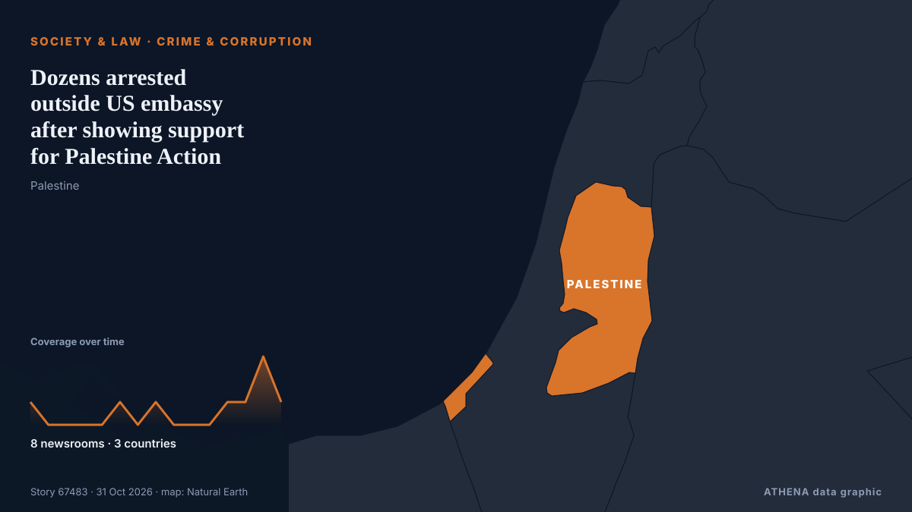

Crime & corruption
| 18 Oct | 0 |
|---|---|
| 19 Oct | 0 |
| 20 Oct | 0 |
| 21 Oct | 0 |
| 22 Oct | 2 |
| 23 Oct | 1 |
| 24 Oct | 2 |
| 25 Oct | 1 |
| 26 Oct | 4 |
| 27 Oct | 2 |
| 28 Oct | 1 |
| 29 Oct | 4 |
| 30 Oct | 7 |
| 31 Oct | 0 |

Dozens arrested outside US embassy after showing support for Palestine Action
Expressing support for the group is an offence under the Terrorism Act after it was proscribed in June 2025. from The Irish News (Belfast)
IGP Special Operations Team arrests 192 suspects in nationwide anti-crime operations
The Ghana Police Service's IGP Special Operations Team has arrested 192 suspects during a series of intelligence-led operations across parts of the country, recovering suspected narcotic drugs… from MyJoyOnline
Plaka Explosion: Three Suspects Linked to 80 Police Cases
Three men arrested over the Plaka explosion that killed six people are linked to nearly 80 previous police cases, according to Greek reports. from Greek City Times
Accountant’s employee loses €6,000 in online scam
An employee for an accountant’s office in Paphos lost €6,000 when she received an email, appearing to be from a bank, asking her to update her personal details. from Cyprus Mail
This mayor crusaded against cartels in Mexico. Now his assassination haunts his city
Mayor Grecia Quiroz navigates the streets of Uruapan with heavy security, nearly a year after her partner, Carlos Manzo, was assassinated. from ABC News (International)
U.K. police share update on probe into claims against Meghan Markle’s father
The Metropolitan Police acknowledged receiving a letter in 2019 regarding accusations about Meghan Markle’s father but did not share this information with other law agencies. from Arab News
Police investigating ‘report of assault’ as video is posted of Enoch Burke confronting Archbishop of Armagh after funeral
Police confirm they are investigating assault of a member of the clergy on Thursday at St Patrick’s Cathedral in Armagh. from The Irish News (Belfast)
French presidential hopeful Édouard Philippe quizzed in embezzlement case
French investigators on Thursday questioned former prime minister Édouard Philippe, a candidate in next year's presidential election, in a case of alleged embezzlement of public funds. from France 24 English
Ex-FBI officials charged with lying to Congress about Hunter Biden probe
Two former FBI officials are facing charges for lying to Congress about their involvement in the agency’s investigation into Hunter Biden’s laptop. from The Hill
Costa Rica Fires Minister Over Pacific Pact
President Laura Fernández dismissed Trade Minister Indiana Trejos and shelved the 12-nation Trans-Pacific pact Costa Rica planned to sign in November. from The Rio Times
Man charged with fraud over Bondi Beach shooting claim
Detectives identified a 46-year-old man suspected of falsely claiming he was injured in the Bondi shooting and subsequently making fraudulent compensation claims. from Free Malaysia Today
China adopts measures to tighten discipline in Communist Party
The fifth plenum of the Central Committee, led by President Xi Jinping, adopted a decision on "advancing full and rigorous governance of the party", which includes reducing corruption among cadres… from CNA (Channel NewsAsia)
Iran dismantles 4 terrorist cells, arrests 16
Iran claimed that some of the 16 people it had arrested had entered Iran from abroad. from Al-Monitor
Woman shot dead at home in Adelaide
A woman has been shot dead by police at a home in Firle in Adelaide's eastern suburbs. from Sydney Morning Herald
Karnataka man booked in several murder cases beaten to death; 2 brothers held
[GroundUp] 50 people murdered the man in broad daylight on Thursday morning. from AllAfrica
Judiciary chief meets with Leader
TEHRAN, Oct. 24 (MNA) – Iran's Judiciary Chief Gholam-Hossein Mohseni-Ejei has met with Leader of the Islamic Revolution Ayatollah Seyyed Mojtaba Hosseini Khamenei. from Mehr News (English)
Man, 39, charged with murder of man in Mallow
A 39-year old man has been charged with the murder of Paul O'Connor in Mallow almost a fortnight ago. from RTÉ News
Man arrested in connection with suspicious fire in Napier
Police say a man has been arrested in connection with one of three suspicious fires which happened in central Napier on Monday morning. from RNZ National